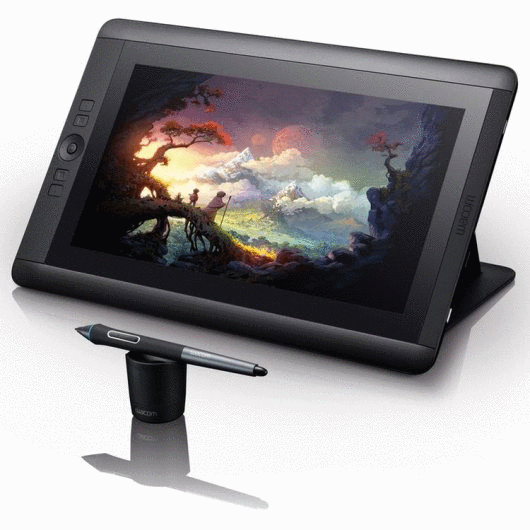
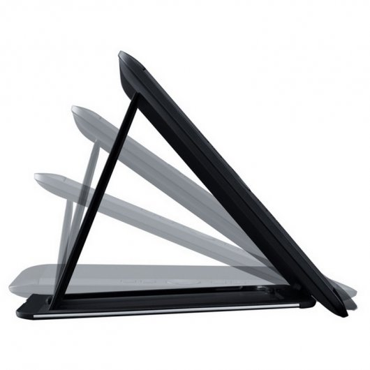
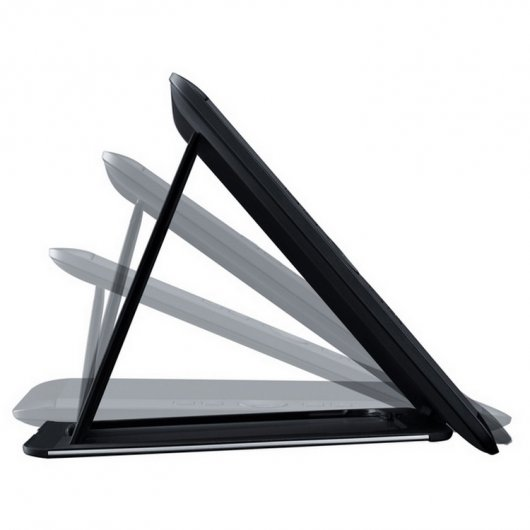

FUTURETECH STORE |

 

|
Wacom Cintiq 13HD
720,87€
Experimenta tu creatividad de una manera natural, directamente en la pantalla compacta Full HD de Cintiq.
Características
Adopta una posición de trabajo cómoda gracias a su versatilidad.
Todo con el poderoso lápiz Pro Pen.
Con 2048 niveles de sensibilidad a la presión, reconocimiento de inclinación y un diseño ergonómico nuevo y más cómodo, el lápiz Pro Pen brinda un control preciso y una mejor sensación.
Y una manera fácil de llevarlo contigo.
El estuche de transporte compacto del lápiz Pro Pen incluye un espacio para puntas y
anillos de colores que ayudan a diferenciar fácilmente entre varios lápices.
Fácil de instalar en qualquier PC o Mac.
El práctico cable 3 en 1 reduce el desorden en los cables y simplifica la configuración en cualquier equipo Mac o PC.
Especificaciones
Screen size (measured diagonally)13.3 inch
Technologya-Si Active Matrix TFT LCD (IPS)
ResolutionFull HD 1920 X 1080
Displayable colors (maximum)16.7 million
Aspect ratio16:09:00
Viewing angle178° (89°/89°) H, (89°/89°) V
Contrast Ratio700:1
Brightness250 cd/m2
Response Rate25 ms
Active area293.8 x 165.2mm
Color Gamut75% Adobe RGB
Industry standard pre-sets6500° K whitepoint default
Graphics InputHDMI
PenPro Pen
Pressure Levels2048, both pen tip and eraser
Tilt Range40 degrees
Tilt recognition±60 levels
Type)Pressure-sensitive, cordless, battery-free)
SwitchesTip switch, 2 side switches, eraser
Nibs5 standard, 3 felt, 1 stroke
Pen boxYes
Pen standYes
GripLatex-free silicone rubber
ModelFUZ-A203
TechnologyPatented electromagnetic resonance method
Resolution5080 lines per inch
ExpressKeys™4 customizable, application-specific
Rocker ring and Home button4 position customizable
Radial menuYes
Precison modeYes
Display toggleYes
Stand adjustability3 angles and detachable
OrientationRight or left-handed use
Size375 x 248 x 14mm
Weight1.2 kg
Cables includedWacom 3-in-1
PC and Mac connectionHDMI and USB
Display ConnectionWacom 3-in-1
Peripheral connectionsUSB 2.0 port
100 to 240 VAC, 50/60Hz19 VDC, 1.58 A (max)
Power Supply Output19 VDC, 1.58 A (max)
Power ConsumptionMax. Power Consumption: 9.0 W, 1 W or less when asleep 0.5 W or less when off
System requirements
Windows® 8, 7 (SP1, 32 / 64 bit), Vista SP2, XP SP3
Mac: OS X, v 10.6.8 or later (Intel processor)
|


{kind=link}